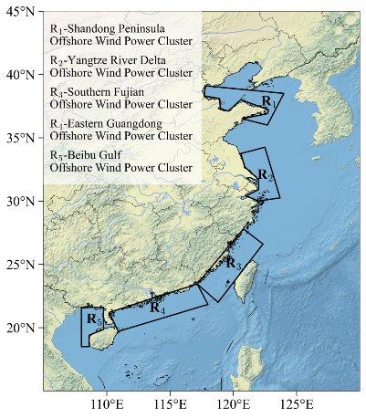
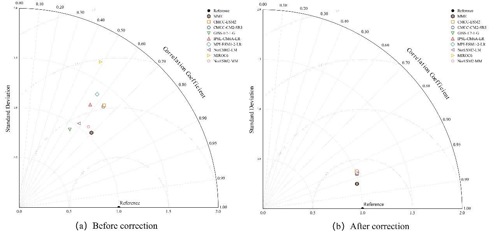
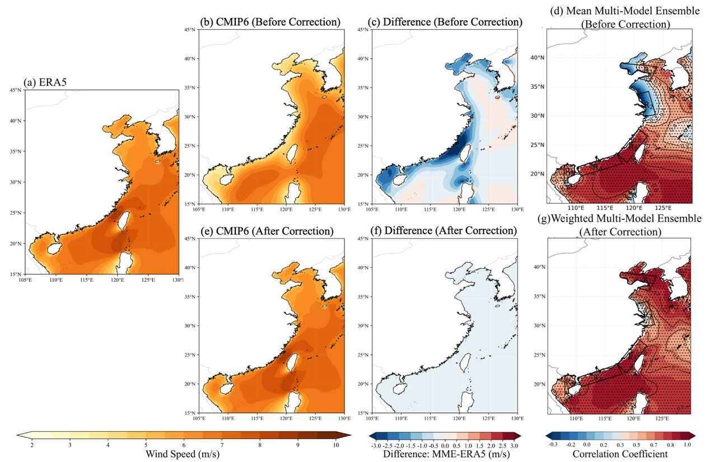
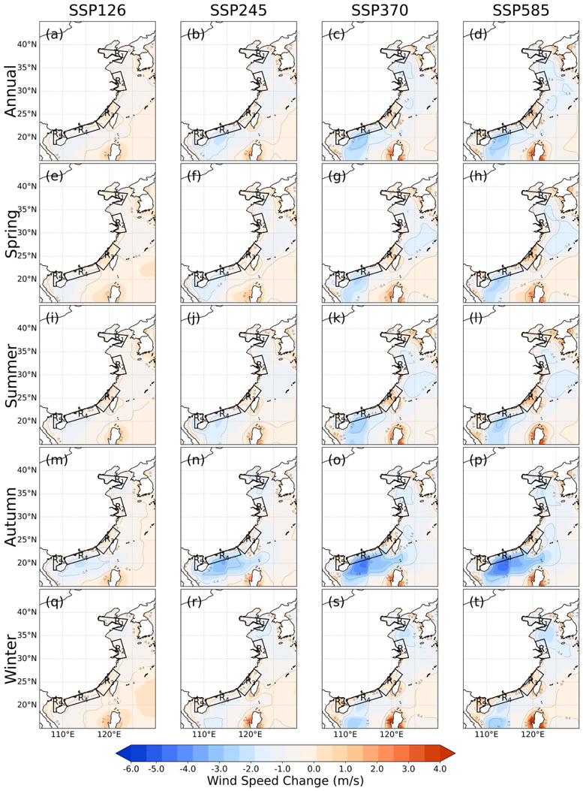
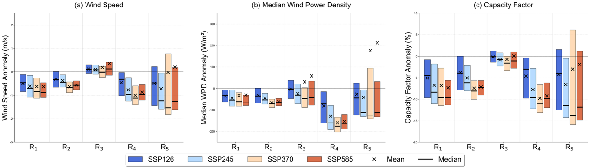
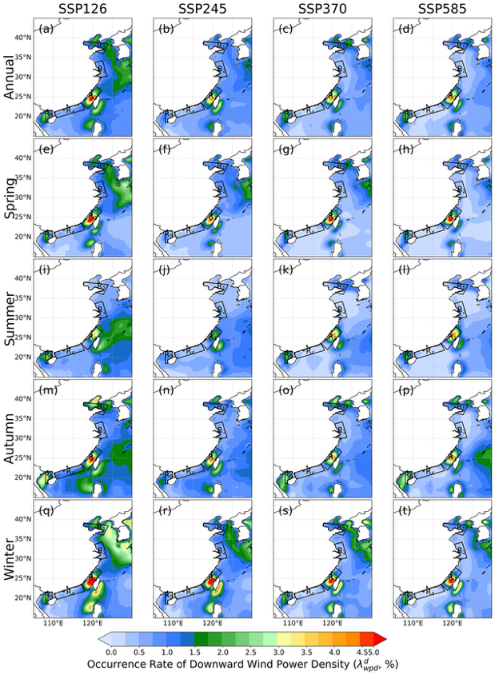
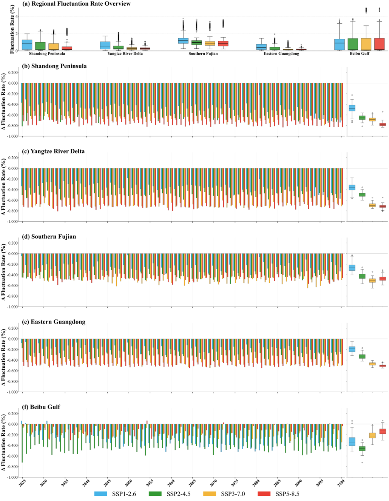
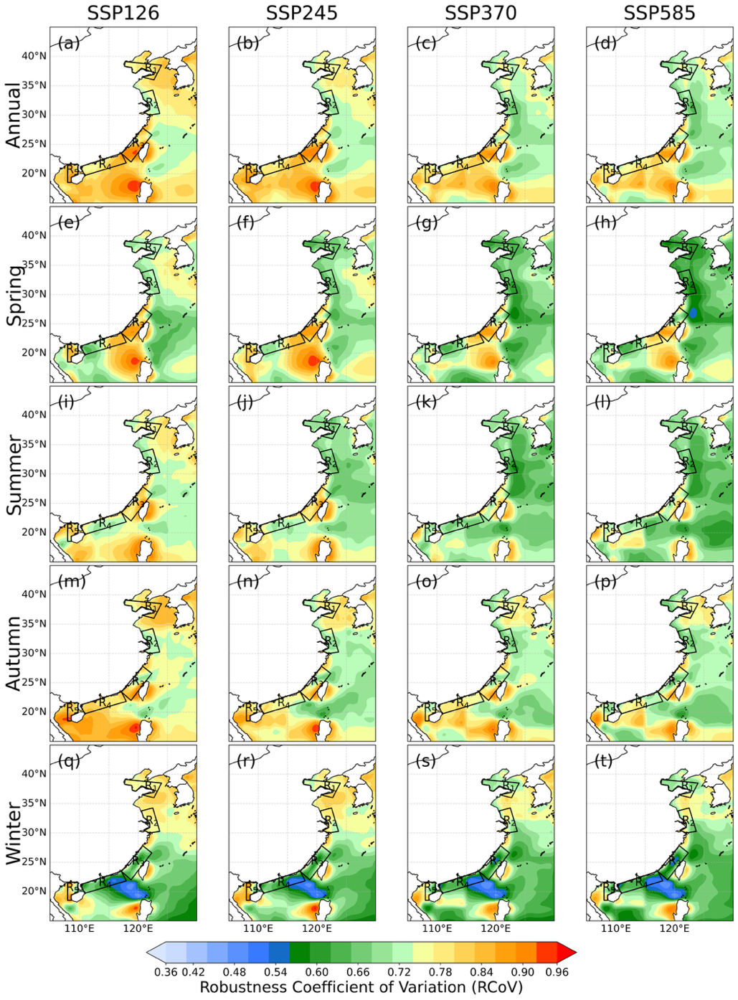
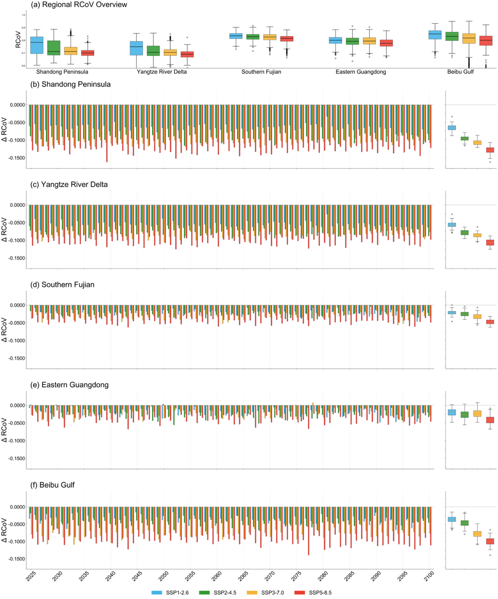

不同气候变化情景下中国近海风能资源变化预估
Projection of Offshore Wind Resource Variations in China under Different Climate Change Scenarios
Lin XUE¹²³⁴，Yulin LI¹，Yanxia ZHAO²³⁴*，Muyuan LI²⁴，Weidong Chen⁵
Lin XUE1,2,3,4，Yulin LI1, Yanxia ZHAO2,3,4*，Muyuan LI2,4, and Weidong Chen5
1 云南财经大学金融学院，昆明 650221，中国
1 School of Finance, Yunnan University of Finance and Economics, Kunming 650221, China
2 中国气象科学研究院—中再巨灾风险管理公司·气象风险与保险联合开放实验室，北京 100081，中国
2 CAMS & China Re CRM·Joint Open Lab on Meteorological Risk and Insurance, Beijing 100081, China
3 复旦大学大气科学研究院大气与海洋科学系，上海 200438，中国
3 Department of Atmospheric and Oceanic Sciences, Institute of Atmospheric Sciences, Fudan University, Shanghai 200438, China
4 中国气象局金融气象重点实验室，上海 200438，中国
4 Key Laboratory of Financial Meteorology, China Meteorological Administration, Shanghai 200438, China
5 中国电力科学研究院，江苏南京 210003，中国
5 China Electric Power Research Institute, Nanjing, Jiangsu 210003, China
2026 年 7 月 10 日投稿
Submitted July 10, 2026
由国家自然科学基金（42565002）、气象风险与保险联合实验室开放研究基金（2024F002）、云南省“兴滇英才支持计划”青年项目、云南省基础研究计划面上项目（202501AT070467）资助。
Supported by the National Natural Science Foundation of China (42565002), the Open Research Fund of the Joint Laboratory for Meteorological Risk and Insurance (2024F002), the Youth Program of the Xingdian Talent Support Program of Yunnan Province, the General Program of the Yunnan Provincial Basic Research Program (202501AT070467).
* 通信作者：zhaoyanxia@fudan.edu.cn。
* Corresponding author: zhaoyanxia@fudan.edu.cn.
电话：021-31248896
Tel: 021-31248896
©中国气象学会与 Springer-Verlag Berlin Heidelberg 2022
©The Chinese Meteorological Society and Springer-Verlag Berlin Heidelberg 2022
摘要
ABSTRACT
气候变化下近海风能资源的变化对能源安全和供应稳定性构成重大挑战。
Variation of offshore wind resources under climate change poses substantial challenges to energy security and supply stability.
基于偏差校正的 CMIP6 多模式集合风场和 ERA5 再分析资料，本研究预估了 2025—2100 年不同排放情景下中国 100 m 高度近海风能资源均值和变率特征的变化。
Based on bias-corrected CMIP6 multi-model ensemble winds and ERA5 reanalysis, this study investigates projected changes in the mean and variability of offshore wind resources at 100 m over China during 2025–2100 under different emission scenarios.
结果表明，原始 CMIP6 模式系统性地低估了近海风速，经过分位数映射和加权多模式集合处理后，偏差显著减小。
Results show that the original CMIP6 models systematically underestimate offshore wind speeds, and the bias is substantially reduced after applying quantile mapping and weighted multi-model ensemble.
台湾海峡和南海的近海风能资源十分丰富。
Offshore wind resources are abundant in the Taiwan Strait and South China Sea.
未来情景下风速、容量因子和风功率密度预计将减小，特别是在南海北部和东海，且减幅在更高排放情景下更加明显。
Wind speeds, capacity factors, and wind power density are projected to decrease under future scenarios, especially in the northern South China Sea and East China Sea, with reductions becoming more pronounced under higher emissions.
就变率而言，波动频率和强度在南海和台湾海峡最高，而北方近海区域的变率较弱且更稳定。
For variability, fluctuation frequency and intensity are highest in the South China Sea and Taiwan Strait, with weaker and more stable variability in northern offshore regions.
未来预估表明波动频率和强度总体下降，但在高排放情景下年际变率和极端值增大，意味着风能资源的不确定性和不稳定性上升。
Future projections indicate a general decrease in fluctuation frequency and intensity, but interannual variability and extremes expand under high-emission scenarios, suggesting increasing uncertainty and instability of wind resources.
在五大风电集群中，北部湾集群在均值和变率特征上均表现出最强的敏感性，SSP5-8.5 情景下风功率密度标准差达 712.31 W m⁻²，容量因子极端异常超过 40%。
Among the five major wind power clusters, the Beibu Gulf cluster exhibits the strongest sensitivity in both mean and variability characteristics, with wind power density standard deviations reaching 712.31 W m⁻² and extreme capacity factor anomalies exceeding 40% under SSP5-8.5.
粤东集群的均值下降最为一致，SSP3-7.0 情景下容量因子中位数降幅达 −10.96%。
The eastern Guangdong cluster shows the most consistent mean decline, with median capacity factor reductions reaching −10.96% under SSP3-7.0.
关键词：气候变化，风能资源变化，海上风电，CMIP6，中国近海
Key words: climate change，wind energy resource variation，offshore wind power, CMIP6, offshore China
1．引言
1．Introduction
为应对气候变化并保障国家能源安全，中国一直在积极推进可再生能源的大规模开发。
In response to climate change and the imperative of national energy security, China has been actively advancing the large-scale development of renewable energy.
海上风电凭借其发电容量大、年利用小时数高、占地少等优势，已成为清洁能源转型的关键组成部分。
Offshore wind power has emerged as a key component of the clean energy transition due to its large generation capacity, high annual utilization hours, and minimal land use requirements.
中国的海上风电累计装机容量和新增装机容量均居世界首位（中国风能协会，2024）。
China ranks first worldwide in both total installed capacity and newly added offshore wind capacity (Chinese Wind Energy Association, 2024).
黄海、东海和南海北部已成为中国海上风电开发的主要区域。
And the Yellow Sea, East China Sea, and the northern South China Sea have become major regions for offshore wind power development in China.
然而，风资源的变化和匮乏可能减少发电量、降低风电场收益，甚至危及财务稳定性（Shin and Baldick, 2018; Hain et al., 2018; Yang, 2019）。
However, winds variation and drought may reduce power generation, diminish wind farm revenues, and even compromise financial stability (Shin and Baldick, 2018; Hain et al., 2018; Yang, 2019).
此外，据预估，在风光发电系统中，气候加剧的供需失衡将显著抬高小时级电力成本（Zheng et al., 2025）。
Moreover, climate-intensified supply–demand mismatches in wind and solar power systems have been projected to increase hourly electricity costs significantly (Zheng et al., 2025).
作为资本密集型产业，风资源的减少还可能进一步引发金融风险，导致电力市场中的合同违约。
As a capital-intensive industry, reductions in wind resources may further trigger financial risks and lead to contractual defaults in power markets.
因此，认识风资源的未来演变对保障中国海上风电的可持续发展至关重要。
Therefore, understanding the future evolution of wind resources is critical for ensuring the sustainable development of offshore wind power in China.
尽管中国近海风能资源丰富，但受季风环流和海岸地形影响，其时空分布高度不均（Zhu et al., 2021）。
Although offshore China is characterized by abundant wind energy resources, their spatial and temporal distributions are highly heterogeneous due to monsoon circulation and coastal topography (Zhu et al., 2021).
在气候变化背景下，大气环流和海洋状况的改变预计都会改变风资源特征。
Under climate change, both atmospheric circulation and oceanic conditions are expected to alter wind resource characteristics.
已有研究表明，中纬度地区的风速总体趋于减小，但某些海洋区域可能增大（Zeng et al., 2019; Deng et al., 2022; Shen et al., 2022）。
Previous studies have suggested that wind speeds in mid-latitude regions generally tend to decrease, although increases may occur in certain oceanic regions (Zeng et al., 2019; Deng et al., 2022; Shen et al., 2022).
近期研究表明，在全球变暖背景下，持续性低风速事件正变得更加频繁、持续时间更长，特别是在中国东北地区（Qu et al., 2025）。
Recent studies have demonstrated that prolonged low-wind events are becoming more frequent and extended under global warming, particularly in northeastern China (Qu et al., 2025).
基于第六次耦合模式比较计划（CMIP6）的风场，已有研究发现了中国范围内风资源的下降趋势（Deng et al., 2021; Zhang, 2023），且中国近海区域差异显著，以南海北部和东海最为突出（Deng et al., 2024）。
Based on winds from the Coupled Model Intercomparison Project Phase 6 (CMIP6), declining trends in wind resources across China have been found (Deng et al., 2021; Zhang, 2023), with significant regional disparities over offshore China, most notably in the northern South China Sea and the East China Sea (Deng et al., 2024).
东海风速在辐射强迫不断增强的情景下呈显著下降趋势（Xu et al., 2024; Yao et al., 2025），而南海则观测到风速增强（Xu et al., 2024）。
Wind speeds in the East China Sea exhibit a significant declining trend under escalating radiative forcing (Xu et al., 2024; Yao et al., 2025), whereas intensification is observed in the South China Sea (Xu et al., 2024).
此外，Wang et al. (2025) 强调，全球风电极端低产出事件预计将加剧，到本世纪末，目前超过 75% 的已装机的风电区域将经历更大的产出异常。
Moreover, Wang et al. (2025) highlighted that extreme low-production events of wind power are projected to intensify globally, with over 75% of currently installed wind power areas experiencing greater production anomalies by the late century.
尽管以往研究系统地考察了风资源的历史变化和未来趋势，但主要关注均值特征，对变率的关注有限。
Although previous studies have systematically investigated the historical changes and future trends of wind resources, they have primarily focused on mean features with limited attention to the variability.
此外，CMIP6 模式在复杂海岸区域仍存在系统性偏差，特别是在中国南方近海，风速经常被低估（Miao et al., 2025）。
Furthermore, CMIP6 models remain systematic biases in complex coastal regions, particularly over southern China, where wind speeds are frequently underestimated (Miao et al., 2025).
为弥补这些不足，本研究利用 CMIP6 多模式模拟和欧洲中期天气预报中心（ECMWF）第五代大气再分析（ERA5）资料，评估了情景下中国近海风资源均值和变率的预估变化。
To address these gaps, this study evaluates projected changes in both the mean and variability of wind resources in offshore China under scenarios by using CMIP6 multi-model simulations and the fifth-generation European Centre for Medium-Range Weather Forecasts (ECMWF) atmospheric (ERA5) reanalysis.
首先评估所选 CMIP6 模式的风速模拟性能，随后构建基于性能加权的多模式集合（WMME）。
The wind speed simulation performance of the selected CMIP6 models is first evaluated, and a performance-weighted multi-model ensemble (WMME) is subsequently constructed.
基于 WMME 风场，研究了中国近海（105°–130°E，15°–45°N，图 1）100 m 高度均值和变率特征的预估变化。
Based on WMME winds, the projected changes in mean and variability characteristics at 100 m height over offshore China (105°–130°E, 15°–45°N, Fig. 1) are investigated.

图 1. 中国近海研究区域及五大海上风电集群。
Fig. 1. Study region of offshore China and the five major offshore wind power clusters.
R1–R5 表示根据《可再生能源发展“十四五”规划》和中国海上风电场现状分布（https://map.4coffshore.com/offshorewind/）划定的海上风电集群，分别位于山东半岛、长三角、闽南、粤东和北部湾近海区域。
R1–R5 represent the offshore wind clusters defined according to the 14th Five-Year Plan for Renewable Energy Development and the current distribution of offshore wind farms in China (https://map.4coffshore.com/offshorewind/), which are in the offshore regions of the Shandong Peninsula, the Yangtze River Delta, southern Fujian, eastern Guangdong, and the Beibu Gulf respectively.
2．资料与方法
2．Data and Methods
2.1 资料
2.1 Data
本研究使用 CMIP6 情景模式比较计划（ScenarioMIP）试验（O'Neill et al., 2016）在共享社会经济路径（SSPs）SSP1-2.6、SSP2-4.5、SSP3-7.0 和 SSP5-8.5 下模拟的近地面风速（Zhou et al., 2019; Zhang et al., 2019）。
This study uses near-surface wind speed simulated by CMIP6 Scenario Model Intercomparison Project (ScenarioMIP) experiments (O'Neill et al., 2016) under Shared Socioeconomic Pathways (SSPs) 1-2.6, SSP2-4.5, SSP3-7.0 and SSP5-8.5 (Zhou et al., 2019; Zhang et al., 2019).
这些情景代表不同的温室气体排放轨迹，到 2100 年辐射强迫分别约达 2.6 W m⁻²、4.5 W m⁻²、7.0 W m⁻² 和 8.5 W m⁻²。
These scenarios represent different greenhouse gas emission trajectories, with radiative forcing reaching approximately 2.6 W m⁻², 4.5 W m⁻², 7.0 W m⁻², and 8.5 W m⁻² by 2100, respectively.
利用 2025—2100 年的 10 m 风场预估中国近海风能资源均值和变率特征的未来变化。
The 10-m wind fields from 2025 to 2100 are used to project future changes in the mean and variability characteristics of offshore wind resources in China.
表 1.
Table 1.
所选 CMIP6 模式信息
Information of selected CMIP6 models
| 序号 / No. | 模式 / Model | 国家 / Country | 水平分辨率 / Horizontal Resolution | 时间分辨率 / Time Resolution | 机构 / Institution |
|---|---|---|---|---|---|
| 1 | CMCC-CM2-SR5 | 意大利 / Italy | 1.00°×1.00° | 3 h | 欧洲-地中海气候变化中心 / Euro-Mediterranean Center on Climate Change |
| 2 | CMCC-ESM2 | 意大利 / Italy | 1.00°×1.00° | 6 h | 欧洲-地中海气候变化中心 / Euro-Mediterranean Center on Climate Change |
| 3 | IPSL-CM6A-LR | 法国 / France | 2.00°×2.00° | 3 h | 皮埃尔-西蒙·拉普拉斯研究所 / Institut Pierre-Simon Laplace |
| 4 | MPI-ESM1-2-HR | 德国 / Germany | 1.00°×1.00° | 6 h | 马克斯·普朗克气象研究所 / Max Planck Institute for Meteorology |
| 5 | MPI-ESM1-2-LR | 德国 / Germany | 2.00°×2.00° | 6 h | 马克斯·普朗克气象研究所 / Max Planck Institute for Meteorology |
| 6 | GISS-E2-1-G | 美国 / USA | 2.00°×2.50° | 6 h | 美国国家航空航天局戈达德空间研究所 / NASA Goddard Institute for Space Studies |
| 7 | MIROC6 | 日本 / Japan | 1.00°×1.00° | 3 h | MIROC 联盟 / MIROC Consortium |
| 8 | NorESM2-MM | 挪威 / Norway | 1.00°×1.00° | 3 h | 挪威气候中心 / Norwegian Climate Centre |
采用 CMIP6 中空间和时间分辨率相对较高的八个大气—海洋耦合气候模式的风场，以量化近海风能资源的变率（表 1，Chen et al., 2012; Zha et al., 2021）。
Winds from eight atmosphere–ocean coupled climate models in CMIP6 with relatively high spatial and temporal resolutions are employed to quantify the variability of offshore wind resources, (Table 1, Chen et al., 2012; Zha et al., 2021).
并使用 1995—2014 年 ERA5 再分析资料提供的 10 m 风检验所选 CMIP6 模式的风速模拟性能（Olauson, 2018; Hersbach et al., 2020）。
And 10-m wind provided by the ERA5 reanalysis dataset from 1995–2014 were used to verify the wind simulation performance of the selected CMIP6 models (Olauson, 2018; Hersbach et al., 2020).
ERA5 是欧洲中期天气预报中心（ECMWF）开发的第五代全球大气再分析产品，时间分辨率为 1 小时，空间分辨率为 0.25° × 0.25°。
The ERA5 is the fifth-generation global atmospheric reanalysis product developed by the European Centre for Medium-Range Weather Forecasts (ECMWF), with a temporal resolution of 1 hour and a spatial resolution of 0.25° × 0.25°.
它已被广泛应用于全球和区域风速变率、气候模式评估以及可再生能源资源评估等研究（Ramon et al., 2019; Minola et al., 2020; Yuan et al., 2026）。
It has been widely applied in studies of global and regional wind speed variability, climate model evaluation, and renewable energy resource assessments (Ramon et al., 2019; Minola et al., 2020; Yuan et al., 2026).
由于所选 CMIP6 模式的原始空间分辨率不同，所有输出均采用克里金插值插值到与 ERA5 相同的分辨率（0.25° × 0.25°）（Lee C, 2022; Hesty et al., 2026）。
As the original spatial resolutions of selected CMIP6 models are different, all outputs were interpolated to match the resolution of ERA5 (0.25° × 0.25°) using Kriging interpolation (Lee C, 2022; Hesty et al., 2026).
考虑到区域系统性偏差和模式间不确定性，采用基于概率密度函数（PDF）的偏差校正结合涌现约束加权的方法，以提高预估的可靠性（第 2.2 节）。
Considering regional systematic biases and inter-model uncertainties, a PDF-based bias correction combined with emergent constraint weighting was applied to improve projection reliability (Section 2.2).
2.2 方法
2.2 Methods
2.2.1 CMIP6 模拟性能检验
2.2.1 Verification of CMIP6 simulation performance
采用泰勒图评估 CMIP6 模拟与 ERA5 再分析之间 10 m 风速的差异（Taylor, 2001）。
Taylor diagrams are employed to assess the differences in 10-m wind speed between CMIP6 simulations and ERA5 reanalysis (Taylor, 2001).
泰勒图中包含标准差比（）、相关系数（）和中心化均方根误差（）。
The standard deviation ratio (), correlation coefficient (), and centered root-mean-square error () are included in the Taylor diagram.
这些统计量分别用于评估模式模拟相对于参考数据集的离散度、相似性和偏差大小。
These statistics are used to evaluate the dispersion, similarity, and bias magnitude of model simulations relative to the reference dataset, respectively.
2.2.2 偏差校正
2.2.2 Bias correction
对所选 CMIP6 模式在历史（1995—2014 年）和未来（2025—2100 年）两个时段，均应用了基于 PDF 的分位数映射方法并结合涌现约束加权方法（Themeßl et al., 2011; Cannon et al., 2015; Knutti et al., 2017; Hall et al., 2019）。
A PDF-based quantile mapping method combined with an emergent constraint weighting approach was applied to the selected CMIP6 models for both the historical (1995–2014) and future (2025–2100) periods (Themeßl et al., 2011; Cannon et al., 2015; Knutti et al., 2017; Hall et al., 2019).
以 ERA5 为参照，在每个格点和每个月构建基于累积分布函数（CDF）的映射，共 1000 个分位层级（0.1%–99.9%）。
Using ERA5 as reference, monthly CDF-based mappings were constructed at each grid point and month with 1000 quantile levels (0.1%–99.9%).
对于未来的模拟值 ：
For a future simulated value :
其中 为历史 CDF， 为观测 CDF 的逆函数。
where is the historical CDF and the inverse observed CDF.
该方法在保留时间变率的同时，能有效校正系统性偏差（Themeßl et al., 2011; Cannon et al., 2015）。
This method effectively corrects systematic biases while preserving temporal variability (Themeßl et al., 2011; Cannon et al., 2015).
涌现约束方法采用六项指标评估模式性能，包括：空间相关系数（）、时间相关系数（）、平均偏差（Bias）、均方根误差（RMSE）、变率比（）和季节循环技巧（）（Hall et al., 2019）。
The emergent constraint method evaluates model performance using six metrics, including: spatial correlation coefficient（）, temporal correlation（）, mean bias (Bias), root-mean-square error (RMSE), variability ratio（）, and seasonal cycle skill（）(Hall et al., 2019).
综合性能评分 S 计算如下：
A composite performance score S is calculated:
式中 – 为归一化得分（0–1）。
Where – are normalized scores (0–1).
采用指数加权方案确定各模式权重：
An exponential weighting scheme determines individual model weights:
其中 遵循 Knutti et al. (2017)。
where following Knutti et al. (2017).
加权集合为：
The weighted ensemble is:
这一两步方法将统计校正与物理约束相结合，为近海风能资源变化提供了更可靠的预估。
This two-step approach integrates both statistical correction and physical constraints, providing more reliable projections for offshore wind resource variations.
2.2.3 平均风资源特征指标
2.2.3 Indicators of Mean Wind Resource Characteristics
平均风资源通过风机轮毂高度（100 m）处的平均风速、中位数风功率密度和容量因子来评估。
The mean wind resources are evaluated by the mean wind speed at the turbine hub height (100 m), median wind power density, and capacity factor.
利用幂律风廓线将 10 m 风速（）外推至 100 m（）（Peterson and Hennessey, 1978; Emeis, 2014）：
Wind speeds at 10 m () are extrapolated to 100 m () using the power-law wind profile (Peterson and Hennessey, 1978; Emeis, 2014):
其中 参考中国建筑荷载规范 GB 50009–2012。
where referencing the Chinese building load code GB 50009–2012.
风功率密度首先按下式计算：
The wind power density is firstly calculated as:
其中 为空气密度（1.225 kg m⁻³）， 为轮毂高度风速。
where is the air density (1.225 kg m⁻³), and is the hub-height wind speed.
然后取 WPD 的中位数，得到 。
The median value of WPD is then taken to obtain .
容量因子（CF）为风机实际输出功率与理论最大输出功率之比（Zhang and Li, 2022）：
The capacity factor (CF) is the ratio of the actual power output to the theoretical maximum output of a wind turbine (Zhang and Li, 2022):
根据中国现役主要海上风电机组，切入、额定和切出风速分别设为 3、12 和 25 m s⁻¹。
Based on main operational offshore wind turbines in China, the cut-in, rated, and cut-out wind speeds are set to 3, 12, and 25 m s⁻¹, respectively.
2.2.4 风资源变率指标
2.2.4 Indicators of Wind Resource Variability
风功率密度下降事件发生率（）用于量化波动频率（Ren, 2020）：
The occurrence rate of downward wind power density events () quantifies fluctuation frequency (Ren, 2020):
其中 为总观测时段， 为以 1 小时间隔超过 200 W m⁻² 阈值的下降事件持续时间（Gunturu and Schlosser, 2012）。
where is the total observation period and the duration of downward events exceeding the 200 W m⁻² threshold at 1-h interval (Gunturu and Schlosser, 2012).
采用稳健变异系数（）刻画变率强度（Lee et al., 2018; Cai and Bréon, 2021）。
The robust coefficient of variation () is used to characterize variability intensity (Lee et al., 2018; Cai and Bréon, 2021).
其中 为 时刻的风功率密度， 表示中位数风功率密度。
where is the wind power density at time , and denotes the median wind power density.
3．结果
3．Results
3.1 CMIP6 模式性能与近海风速偏差校正
3.1 CMIP6 Model Performance and Bias Correction of Offshore Wind Speed
为确保分析的可靠性，以 1995—2014 年 ERA5 再分析资料的 10 m 风速为参照，评估所选 CMIP6 模式及其多模式集合平均（MME）在中国近海的模拟能力。
To ensure the reliability of the analysis, 10-m wind speeds from the ERA5 reanalysis dataset from 1995–2014 was used as a reference to evaluate the capability of the selected CMIP6 models and their multi-model ensemble mean (MME) in offshore China.
并基于各模式的模拟性能，对 CMIP6 风场进一步开展偏差校正。
And the bias correction was further conducted to winds from CMIP6 based on their model performances.
3.1.1 CMIP6 模式性能
3.1.1 Model performance of CMIP6
以 1995—2014 年 ERA5 风场为参照，针对所选 CMIP6 模式及其 MME 的风场构建了泰勒图（图 2）。
Using winds from ERA5 during 1995–2014 as references, Taylor diagrams were constructed for winds from the selected CMIP6 models and their MME (Fig. 2).
偏差校正前（图 2a），标准差比介于 0.93–1.68，相关系数介于 0.49–0.70，CRMSE 介于 1.39–2.70 m s⁻¹。
Before bias correction (Fig. 2a), the standard deviation ratios ranged from 0.93 to 1.68, correlation coefficients from 0.49 to 0.70, and CRMSE from 1.39 to 2.70 m s⁻¹.
在所选模式中，CMCC-CM2-SR5 和 NorESM2-MM 表现较好，相关系数超过 0.64。
Among the selected models, CMCC-CM2-SR5 and NorESM2-MM showed better performance with correlations exceeding 0.64.
等权 MME 可以减弱单个模式的不稳定性，但仍存在明显差异。
The equal-weight MME can reduced individual model instability, but noticeable discrepancies still remaine.
构建 WMME 后（图 2b），风速模拟性能显著提升。
After constructing the WMME (Fig. 2b), winds simulation performance is improved significantly.
标准差比达到 0.98，相关系数升至 0.97，CRMSE 降至 0.61 m s⁻¹。
The standard deviation reached 0.98, correlation increased to 0.97, and CRMSE decreased to 0.61 m s⁻¹.
WMME 风场表现最优，用于后续分析。
The winds from WMME exhibits the best performance and is employed in subsequent analyses.

图 2. 中国近海 ERA5 与 CMIP6 模拟风速比较的泰勒图。
Fig. 2. Taylor diagram comparing ERA5 and CMIP6-simulated wind speeds over offshore China.
(a) 偏差校正前；(b) 偏差校正后。
(a) Before bias correction; (b) After bias correction.
校正前的集合平均为等权集合，校正后的集合平均为基于 1995—2014 年历史模拟性能构建的 WMME。
The ensemble mean before correction is an equal-weight ensemble, whereas the ensemble mean after correction is a WMME based on the historical simulation performance during 1995–2014.
3.1.2 区域模拟性能与风速空间分布
3.1.2 Regional simulation performance and spatial distribution of wind speed
对历史时期 10 m 模拟风速的空间分布进行了比较（图 3）。
The spatial distribution of simulated winds at 10m are during the historical period are compared (Fig. 3).
中国近海 ERA5 多年平均风速总体自沿岸向外海增大（图 3a）。
The multi-year mean wind speed from ERA5 over offshore China generally increases from coastal areas toward the open ocean (Fig. 3a).
偏差校正前，CMIP6 模拟大体能够再现主要空间特征（图 3b）。
Before bias correction, the CMIP6 simulations can generally reproduce the major spatial features(Fig. 3b).
但等权 MME 的风速在中国近海的近岸和大陆架区域普遍偏低（图 3b、c）。
But wind speed from the equal-weight MME shows a widespread underestimation in nearshore and continental shelf regions of offshore China (Fig. 3b,c).
低估在东海沿岸、黄海和南海北部仍然存在，而外海的偏差较小。
The underestimations remain in the coastal East China Sea, the Yellow Sea, and the northern South China Sea, while the biases over the open ocean are smaller.
此外，等权 MME 与 ERA5 之间的相关系数（图 3d）在东海沿岸及黄海、渤海部分区域较低，表明等权 MME 在中国近海仍存在偏差。
Moreover, correlation coefficients between the equal-weight MME and ERA5 (Fig. 3d) are lower in coastal regions of the East China Sea and parts of the Yellow Sea and Bohai Sea, indicating he equal-weight MME remains bias in offshore China.

图 3. 1995—2014 年中国近海偏差校正前后 CMIP6 MME 与 ERA5 风速之间偏差和相关的空间分布特征。
Fig. 3. Spatial distribution characteristics of bias and correlation between CMIP6 MME and ERA5 wind speed before and after bias correction in offshore China from 1995 to 2014.
(a) ERA5 多年平均风速空间分布；(b) 偏差校正前 CMIP6 MME 平均风速空间分布；(c) 偏差校正前等权 MME − ERA5；(d) 偏差校正前等权 MME 与 ERA5 的相关系数空间分布；(e) 偏差校正后 CMIP6 WMME 风速空间分布；(f) 偏差校正后 WMME − ERA5；(g) 偏差校正后 WMME 与 ERA5 的相关系数空间分布。
(a) Spatial distribution of multi-year mean wind speed from ERA5, (b) Spatial distribution of mean wind speed for CMIP6 MME before bias correction, (c) Equal-weight MME − ERA5 before bias correction, (d) Equal-weight MME vs. ERA5 before bias correction: spatial distribution of correlation coefficients, (e) Spatial distribution of WMME wind speed for CMIP6 after bias correction, (f) WMME − ERA5 after bias correction, (g) WMME vs. ERA5 after bias correction: spatial distribution of correlation coefficients.
打点标注表示通过 99% 信度显著性检验。
Dotted annotations indicate significance at the 99% level.
经过统计偏差校正并引入模式权重后，CMIP6 与 ERA5 风速的空间一致性显著改善（图 3e）。
After the statistical bias correction and introducing model weights, the spatial consistency of wind speeds between CMIP6 and ERA5 improves significantly (Fig. 3e).
两套资料的风速差异在大部分近海明显减小（图 3f）。
The wind speed differences between the two datasets are markedly reduced across most offshore (Fig. 3f).
系统性低估得到缓解，中国近海总体风速偏差接近于零。
And the systematic underestimation is alleviated, with the overall wind speed bias approaching zero in the offshore China.
此外，WMME 与 ERA5 之间的相关系数在中国大部分近海区域升至 0.6 以上（图 3g）。
In addition, the correlation coefficients between the WMME and ERA5 increase to 0.6 over most offshore regions of China (Fig. 3g).
偏差校正后的 WMME 风场在中国近海的空间分布更为准确，将用于后续未来风资源变率分析。
The winds provided by bias-corrected WMME can be more accurate in their spatial distribution over offshore China, which are used in subsequent analyses of future wind resource variability.
3.2 近海风能资源平均特征预估
3.2 Projected mean characteristics of offshore wind energy resources
准确预估中国近海风能资源的平均特征，对优化海上风电场布局、提高发电效率和减缓气候风险至关重要。
Accurate projections of the mean characteristics of offshore wind resources in China are crucial for optimizing offshore wind farm deployment, improving power generation efficiency, and mitigating climate risks.
基于 WMME 风场，通过平均风速、中位数风功率密度和容量因子，预估 SSP1-2.6、SSP2-4.5、SSP3-7.0 和 SSP5-8.5 情景下 2025—2100 年中国近海风能资源的平均特征。
Based on the winds from the WMME , the mean wind speed, median wind power density, and capacity factor were investigated to project the mean characteristics of offshore wind resource in China during 2025–2100 under SSP1-2.6, SSP2-4.5, SSP3-7.0, and SSP5-8.5.
3.2.1 平均风速
3.2.1 Mean wind speed
风机轮毂高度（本研究设为 100 m）平均风速的变化可以指示气候变化下风资源的可利用程度和区域开发适宜性。
Variation of mean wind speed at turbine hub height (set as 100 m in this study) can indicate the wind resource availability and regional development suitability under climate change.
基于 100 m 高度年平均和季节平均风速，比较了 2025—2100 年四种气候变化情景（SSP1-2.6、SSP2-4.5、SSP3-7.0 和 SSP5-8.5）下其相对于历史基准期（1995—2014 年）在中国近海的变化（图 4）。
Based on the annual and seasonal mean wind speeds at 100 m, their changes under the four climate change scenarios (SSP1-2.6, SSP2-4.5, SSP3-7.0, and SSP5-8.5) during 2025–2100 are compared to the historical baseline period (1995–2014) over offshore China (Fig 4).
SSP1-2.6 情景下年平均风速在中国大部分近海变化有限，变化幅度主要在 −1.0 m s⁻¹ 至 0.8 m s⁻¹ 之间。
The annual mean wind speeds under the SSP1-2.6 scenario exhibit limited variations across most of offshore China, with changes primarily ranging from -1.0 m s⁻¹ to 0.8 m s⁻¹.
随着排放情景增强，年平均风速出现广泛减弱，表现为减幅加大且空间范围扩展。
For intensifying emission scenarios, a widespread weakening of annual mean wind speed emerges, characterized by both intensified reductions and expanded spatial extent.
值得注意的是，降幅最显著的区域在南海北部和东海，最大降幅达 −3.2 m s⁻¹。
Notably, the most significant declines are observed in the northern South China Sea and the East China Sea, with maximum decreases reaching −3.2 m s⁻¹.
SSP5-8.5 情景下风速变化最为突出，减弱范围更广、幅度更大。
Wind speed changes are most pronounced in the SSP5-8.5 scenario, with a broader spatial extent and larger magnitude of reductions.
然而，渤海和黄海的变化有限（图 4a–d）。
However, changes in the Bohai Sea and the Yellow Sea are limited (Fig 4 a-d).

图 4. 2025—2100 年四种典型共享社会经济路径（SSP）情景下中国近海全年及四季 100 m 高度多年平均风速相对于 1995—2014 年历史参照期的分布。
Fig. 4. Distribution of multi-year averaged wind speeds at 100m height for the whole year and four seasons in offshore China from 2025 to 2100 in four typical Shared Socioeconomic Pathway (SSP) scenarios relative to the historical reference period from 1995 to 2014.
(a–d) 全年；(e–h) 春季；(i–l) 夏季；(m–p) 秋季；(q–t) 冬季；(a, e, i, m, q) SSP1-2.6；(b, f, j, n, r) SSP2-4.5；(c, g, k, o, s) SSP3-7.0；(d, h, l, p, t) SSP5-8.5（单位：m s⁻¹）。
(a-d) Whole year; (e-h) Spring; (i-l) Summer; (m-p) Autumn; (q-t) Winter; (a, e, i, m, q) SSP1-2.6; (b, f, j, n, r) SSP2-4.5; (c, g, k, o, s) SSP3-7.0; (d, h, l, p, t) SSP5-8.5 (Unit: m s-1).
相对于历史基准期，预估的 100 m 风速表现出显著的季节差异。
Projected 100m wind speeds exhibit notable seasonal differences relative to the historical baseline.
春、夏季，SSP3-7.0 和 SSP5-8.5 情景下中国大部分近海风速减小。
In spring and summer, wind speeds decrease across most of offshore China under SSP3-7.0 and SSP5-8.5.
秋季降幅最显著，特别是在台湾海峡和南海东北部，且随着排放情景增强，减弱的范围和幅度不断扩大。
The most significant reductions occur in autumn, particularly in the Taiwan Strait and the northeastern South China Sea, with the weakening expanding in spatial extent and magnitude as emission scenarios intensify.
冬季，大部分近海区域风速变化相对有限，低排放情景下黄海和渤海北部略有增大。
In winter, wind speed changes are comparatively limited across most offshore regions, with a slight increase found in the Yellow Sea and northern Bohai Sea under low-emission scenarios.
总体而言，随着排放情景增强，预估的 100 m 风速的不确定性和区域差异均增大。
Overall, both the uncertainty and regional differences in projected 100 m wind speed increase with stronger emission scenarios.
对于中国五大海上风电集群（见图 1），2025—2100 年其 100 m 高度平均风速、风功率密度和容量因子相对于历史基准期（1995—2014 年）的预估变化各不相同（图 5a）。
For the five major offshore wind power clusters of China (showed in Fig 1), their projected changes in mean wind speed, wind power density, and capacity factor at 100 m height during 2025–2100 relative to the historical baseline period (1995–2014) are different (Fig. 5a).
山东半岛和长三角集群的风速在所有情景下均呈一致的下降趋势。
Wind speed in the Shandong Peninsula and the Yangtze River Delta clusters exhibit consistent decreasing trends under all scenarios.
山东半岛集群的风速中位数在 SSP1-2.6 情景下为 −0.47 m s⁻¹，在 SSP5-8.5 情景下降至 −0.88 m s⁻¹。
For the Shandong Peninsula cluster, the median of wind speed is −0.47 m s⁻¹ under SSP1-2.6, but it decreases to −0.88 m s⁻¹ under SSP5-8.5.
长三角集群风速变化的中位数在不同排放情景下介于 −0.34 至 −0.66 m s⁻¹，高排放下呈略减弱趋势。
The median of wind speed change ranges from −0.34 to −0.66 m s⁻¹ across different emission scenarios in the Yangtze River Delta cluster, with a slightly weakening trend under higher emission.
所有区域中风速下降最显著的是粤东集群。
The most significant decline in wind speed among all regions is in the eastern Guangdong cluster .
在 SSP2-4.5、SSP3-7.0 和 SSP5-8.5 情景下，风速变化中位数分别为 −0.96、−1.12 和 −0.97 m s⁻¹。
Under the SSP2-4.5, SSP3-7.0, and SSP5-8.5 scenarios, the median of wind changes are −0.96, −1.12, and −0.97 m s⁻¹, respectively.
闽南集群的风速变化保持相对稳定。
The wind speed variations in the southern Fujian cluster remain relatively stable.
低排放条件下略有增大（SSP1-2.6 情景中位数为 0.11 m s⁻¹），而 SSP3-7.0 情景下出现下降（−0.02 m s⁻¹）。北部湾集群在不同情景下的变率最大。
A slight increase is observed under lower emission conditions (median of 0.11 m s⁻¹ in SSP1-2.6), whereas a decline (−0.02 m s⁻¹) occurs under the SSP3-7.0 scenario. the Beibu Gulf cluster exhibits the greatest variability in different scenarios.
尽管部分情景下平均值为正，但所有情景下中位数均为负。
Although the mean values are positive under some scenarios, the median values remain negative across all scenarios.
标准差最高达 3.04 m s⁻¹，表明该集群未来风资源变率存在相当大的不确定性。
The standard deviation reaches up to 3.04 m s⁻¹, indicating considerable uncertainty in future wind resource variability in this cluster.

图 5. 2025—2100 年不同气候情景下中国主要风电集群区域 100 m 高度近海风能资源相对于历史基准期（1995—2014 年）的变化：(a) 平均风速（m s⁻¹）；(b) 中位数风功率密度（W m⁻²）；(c) 容量因子（%）。
Fig. 5. Changes in offshore wind resources over major wind power cluster regions of China during 2025–2100 under different climate scenarios relative to the historical baseline period (1995–2014) at 100 m height: (a) mean wind speed (m s⁻¹), (b) median wind power density (W m⁻²), and (c) capacity factor (%).
仅显示四分位距范围内的值。
Only values within the interquartile range are shown.
R₁–R₅ 分别表示位于山东半岛、长三角、闽南、粤东和北部湾的主要海上风电集群。
R₁–R₅ denote the major offshore wind power clusters located in the Shandong Peninsula, Yangtze River Delta, southern Fujian, eastern Guangdong, and the Beibu Gulf, respectively.
3.2.2 中位数风功率密度
3.2.2 Median wind power density
进一步分析了 2025—2100 年不同 SSP 情景下中国典型海上风电集群 相对于历史基准期（1995—2014 年）的预估变化（图 5b）。
The projected changes of relative to the historical baseline period (1995–2014) were further analyzed for typical offshore wind power clusters in China during 2025–2100 under different SSPs (Fig. 5b).
所有集群的 异常均以负值为主。
The anomalies are predominantly negative in all clusters.
此外，更高排放情景导致更大的 降幅，表明气候变化下中国近海风能资源呈下降趋势。
In addition, higher emission scenarios lead to greater reductions, suggesting a declining trend in China's offshore wind resources under climate change.
下降最稳定、最显著的是粤东、山东半岛和长三角集群，而闽南和北部湾集群表现出更强的极端变率。
The decreases are most stable and pronounced in eastern Guangdong, the Shandong Peninsula, and the Yangtze River Delta clusters, whereas the southern Fujian and the Beibu Gulf clusters exhibit stronger extreme variability.
在更高排放情景下区域离散度明显增大，表明近海风能资源的不确定性更高。
The regional dispersion increases markedly under higher emission scenarios, indicating higher uncertainty in offshore wind energy resources.
具体而言，山东半岛（R₁）和长三角（R₂）集群的 在所有情景下均减小。
Specifically, in the Shandong Peninsula (R₁) and the Yangtze River Delta (R₂) clusters decreases under all scenarios.
山东半岛集群的 在 SSP1-2.6 情景下为 −33.03 W m⁻²，在 SSP5-8.5 情景下降至 −66.94 W m⁻²。
For the Shandong Peninsula cluster, the is −33.03 W m⁻² under SSP1-2.6, and it decreases to −66.94 W m⁻² under SSP5-8.5.
长三角集群（R₂）的 在 SSP3-7.0 情景下为 −71.51 W m⁻²，在 SSP5-8.5 情景下转为 −65.35 W m⁻²。
In the Yangtze River Delta cluster (R₂), the is −71.51 W m⁻² under SSP3-7.0 and turns to −65.35 W m⁻² under SSP5-8.5, respectively.
闽南集群（R₃）的 减小有限，不同情景间差异很小。
The reduction of is limited in the Southern Fujian cluster (R₃), with minimal discrepancies across different scenarios.
减小最显著的是粤东集群（R₄），其风资源下降风险在各集群中最高。
The most significant reduction of is in the eastern Guangdong cluster (R₄) , where is under the highest risk of wind resource decline among the clusters.
在 SSP2-4.5、SSP3-7.0 和 SSP5-8.5 情景下，其 中位数降幅分别为 −160.38、−175.11 和 −162.51 W m⁻²。
Its median reductions of are −160.38, −175.11, and −162.51 W m⁻² under SSP2-4.5, SSP3-7.0, and SSP5-8.5, respectively.
而闽南集群（R₃）在 SSP5-8.5 情景下 的变化均值为 60.19 W m⁻²，但中位数为 −42.56 W m⁻²，标准差高达 263.72 W m⁻²。
While for the southern Fujian cluster (R₃), the variation of in the SSP5-8.5 scenario yields a mean of 60.19 W m⁻² but a median of −42.56 W m⁻², and the substantial standard deviation is 263.72 W m⁻².
这表明其呈右偏分布，未来变率风险更高。
This indicates a right-skewed distribution and higher variability risk in future.
北部湾集群的 WPD 变化在气候变化情景下呈减弱趋势。
The WPD variations in the Beibu Gulf cluster exhibit a weakening trend under climate change scenarios.
然而，其变化的离散度在所有集群中最高。
However, the dispersion of variations is the highest among all clusters.
SSP3-7.0 和 SSP5-8.5 情景下标准差分别达 646.63 和 712.31 W m⁻²。
The standard deviations reach to 646.63 and 712.31 W m⁻² under the SSP3-7.0 and SSP5-8.5 scenarios, respectively.
且极端值超过 2000 W m⁻²，表明北部湾集群存在显著不确定性和更高的极端风险。
And the extreme values exceeding 2000 W m⁻², indicating significant uncertainty and higher extreme risks in the Beibu Gulf cluster.
3.2.3 容量因子
3.2.3 Capacity factor
预估的 CF 异常在所有集群和情景下均为负值，表明风力发电效率总体下降。
The projected CF anomalies are negative across all clusters and scenarios, indicating an overall decline in wind power generation efficiency.
山东半岛（R₁）和长三角（R₂）集群呈一致下降，各情景下 CF 异常中位数分别介于 −4.48% 至 −9.65% 和 −3.95% 至 −7.26%。
The Shandong Peninsula (R₁) and Yangtze River Delta (R₂) clusters exhibit consistent decreases, with median CF anomalies ranging from −4.48% to −9.65% and −3.95% to −7.26% across scenarios, respectively.
粤东集群（R₄）下降最显著，SSP3-7.0 情景下中位数异常达 −10.96%。
The eastern Guangdong cluster (R₄) shows the most pronounced decline, with median anomalies reaching −10.96% under SSP3-7.0.
闽南集群（R₃）中位数变化接近于零，但高排放下不确定性增大，SSP5-8.5 情景下标准差达 4.57%。
The southern Fujian cluster (R₃) shows near-zero median changes but increasing uncertainty under higher emissions, with standard deviations reaching 4.57% under SSP5-8.5.
北部湾集群（R₅）年际变率最强，SSP3-7.0 情景下 CF 异常中位数达 −13.70%，高排放情景下极端异常超过 40%。
The Beibu Gulf cluster (R₅) exhibits the strongest interannual variability, with median CF anomalies reaching −13.70% under SSP3-7.0 and extreme anomalies exceeding 40% under high-emission scenarios.
3.3 近海风能资源变率特征预估
3.3 Projected variability characteristics of offshore wind energy resources
风能的有效利用不仅取决于风资源的平均特征，还取决于其变率。
The effective utilization of wind energy depends not only on the mean characteristics of wind resources but also on their variability.
风资源的过度波动可能威胁电力系统的稳定性。以下分析不同情景下近海风能资源变率频率和强度的预估变化。
Excessive fluctuations of wind resource may threaten the stability of power systems The projected changes in the frequency and intensity of offshore wind energy resources variability under different scenarios are analyzed.
3.3.1 风功率密度下降事件频率
3.3.1 Frequency of downward wind power density events
采用风功率密度下降事件发生率（）刻画风功率密度下降事件的频率。
The downward wind power density occurrence rate () is adopted to characterize the frequency of downward wind power density events.
2025—2100 年不同情景下中国近海年平均和季节平均 的空间分布如图 6 所示。在不同情景下，年平均 的空间分布相似。
The spatial distributions of the annual and seasonal mean over offshore China during 2025–2100 under different scenarios are shown in Fig. 6. In different scenarios, the spatial distribution of the annual mean are similar.
高频区位于台湾海峡和闽南近海，其次是渤海湾和北部湾。
High-frequency areas are in the Taiwan Strait and the offshore of Southern Fujian, followed by the Bohai Bay and the Beibu Gulf.
然而， 的数值在所有情景下并不相同。
However, the value of are different in all scenarios.
SSP1-2.6 情景下风功率密度下降事件的频率最高、范围最广。
The SSP1-2.6 scenario exhibits both the highest frequency and the most extensive extent of the downward wind power density events.
随着排放情景增强， 的数值和范围均减小。
As the emission scenarios intensified, both the value and extent of diminishes.

图 6. 2025—2100 年中国近海 100 m 高度风功率密度下降事件发生率（）年平均及四季的空间分布。
Fig. 6. Spatial distribution of the occurrence rate of downward wind power density events () at 100 m height over offshore China during 2025–2100 for the annual mean and four seasons.
(a–d) 全年；(e–h) 春季；(i–l) 夏季；(m–p) 秋季；(q–t) 冬季。
(a–d) Annual; (e–h) Spring; (i–l) Summer; (m–p) Autumn; (q–t) Winter.
(a, e, i, m, q) SSP1-2.6；(b, f, j, n, r) SSP2-4.5；(c, g, k, o, s) SSP3-7.0；(d, h, l, p, t) SSP5-8.5（单位：%）。
(a, e, i, m, q) SSP1-2.6; (b, f, j, n, r) SSP2-4.5; (c, g, k, o, s) SSP3-7.0; (d, h, l, p, t) SSP5-8.5 (Unit: %).
进一步研究了 2025—2100 年不同排放情景下中国五个典型海上风电集群的 及其相对于历史基准期（1995—2014 年）的异常（图 7）。
The and its anomalies relative to the historical baseline (1995–2014) were further investigated for China's five typical offshore wind power clusters under different emission scenarios from 2025 to 2100 (Fig 7).
具体而言，闽南和北部湾集群的发生率较高，且其未来逐年预估的离散度很大。
Specifically, the Southern Fujian and the Beibu Gulf clusters exhibit higher occurrence rates, accompanied by substantial dispersion in their annual projections in the future.
相比之下，山东半岛和长三角集群的 中位数较低、分布更集中，表明未来发生率总体较低、稳定性更强。
In contrast, in the Shandong Peninsula and Yangtze River Delta clusters show lower median values with more concentrated distributions, suggesting generally lower occurrence rates and stronger stability in the future.
在不同排放情景下，多数集群的 中位数在 SSP1-2.6 情景下略高。
Across different emission scenarios, median values of shows slightly higher in the SSP1-2.6 for most clusters.
在 SSP3-7.0 和 SSP5-8.5 情景下，中位数略降，但极端值范围扩大，表明更高排放下极端变率风险增大（图 7a）。
Under SSP3-7.0 and SSP5-8.5, the median values decrease slightly but their range of extreme values expands, indicating an increased risk of extreme variability under higher emissions (Fig. 7a).

图 7. (a) 中国主要海上风电集群风功率密度下降事件发生率（）的箱线图；(b–f) 各集群 （Δ）相对于历史基准期（1995—2014 年）的未来变化之逐年演变，以及 2025—2100 年 Δ 多年分布的相应箱线图。
Fig. 7. (a) Boxplots of the occurrence rate of downward wind power density events () for major offshore wind power clusters of China; (b–f) Interannual variations of future changes in (Δ) relative to the historical baseline period (1995–2014) and the corresponding boxplots of the multi-year distribution of Δ from 2025–2100 for clusters.
在图 7(b–f) 中，2025—2100 年所有海上风电集群区域的 Δ 均以负值为主，其多年均值约在 −0.13% 至 −0.78% 之间。
In Fig. 7(b–f), Δ across all offshore wind power cluster regions remains predominantly negative during 2025–2100, with their multi-year means ranging from approximately −0.13% to −0.78%.
风资源的年际变率在南北集群间差异显著：山东半岛（0.04%–0.10%）和长三角（0.04%–0.08%）集群波动较大，闽南（0.05%–0.08%）和粤东（0.02%–0.06%）集群变率较弱。
The interannual variability of wind resource differs significantly between the northern and southern clusters, with larger fluctuations over the Shandong Peninsula (0.04%–0.10%) and the Yangtze River Delta (0.04%–0.08%) clusters, and weaker variability over Southern Fujian (0.05%–0.08%) and Eastern Guangdong (0.02%–0.06%) clusters.
北部湾集群的变率仅在 0.07% 至 0.13% 之间变化。
The variability varies only from 0.07% to 0.13% in the Beibu Gulf cluster.
此外，除北部湾外，所有集群随排放增加表现出更强的情景间分离，并伴随负异常的总体增强。
In addition, all clusters except the Beibu Gulf shows enhanced scenario separation with increasing emissions, accompanied by a general intensification of negative anomalies.
相比之下，北部湾集群（R₅）的变率在所有集群中最大，SSP5-8.5 情景下 CF 标准差达 18.82%，分布高度不对称，表明预估风力发电的不确定性最强。
In contrast, the Beibu Gulf cluster (R₅) exhibits the largest variability among all clusters, with CF standard deviations reaching 18.82% under SSP5-8.5 and a highly asymmetric distribution, indicating the strongest uncertainty in projected wind power generation.
尽管所有集群的 Δ 中位数均为负，但在更高排放情景下其离散度和极端值趋于增大，表明气候变化下变率和不确定性更强。
Although the median Δ remains negative in all clusters, the spread and extremes tend to increase under higher emissions scenarios, indicating greater variability and uncertainty under climate change.
3.3.2 变率强度
3.3.2 Intensity of variability
采用稳健变异系数（RCoV）量化风资源变率强度。
The robust coefficient of variation (RCoV) is employed to quantify the intensity of wind resource variability.
2025—2100 年四种情景下，南方近海的 RCoV 值高于北方近海区域（图 8a–d）。
Under the four scenarios during 2025–2100, the values of RCoV in southern offshore China are higher than the ones in the northern offshore regions (Fig. 8a–d).
高 RCoV 主要位于岛屿或半岛的西侧，表明地形分流作用可以放大风资源的波动性。
Higher RCoV are mainly located in the western sides of islands or peninsulas, suggesting that topographical flow diversion can amplify the volatility of wind resources.
中国近海风资源的变率在南海近海和台湾海峡最高。
The variability of China’s offshore wind resources is highest in the South China offshore and the Taiwan Strait.
那里 RCoV 值可超过 0.78。
Where RCoV values can exceed 0.78.
相比之下，北方近海区域 RCoV 值相对较低，黄海和渤海区域主要介于 0.7–0.78。
In contrast, the northern offshore areas exhibit relatively lower RCoV values, which primarily range from 0.7 to 0.78 in the Yellow Sea and Bohai Sea regions.
风资源波动强度最弱的是长三角近海。
And weakest fluctuation intensity of wind resources is in the offshore of Yangtze River Delta.

图 8. 2025—2100 年中国近海 100 m 高度稳健变异系数（RCoV）年平均及四季的空间分布。
Fig. 8. Spatial distribution of the robust coefficient of variation (RCoV) at 100 m height over China’s offshore regions during 2025–2100 for the annual mean and four seasons.
(a–d) 全年；(e–h) 春季；(i–l) 夏季；(m–p) 秋季；(q–t) 冬季；(a, e, i, m, q) SSP1-2.6；(b, f, j, n, r) SSP2-4.5；(c, g, k, o, s) SSP3-7.0；(d, h, l, p, t) SSP5-8.5。
(a-d) Whole year; (e-h) Spring; (i-l) Summer; (m-p) Autumn; (q-t) Winter; (a, e, i, m, q) SSP1-2.6; (b, f, j, n, r) SSP2-4.5; (c, g, k, o, s) SSP3-7.0; (d, h, l, p, t) SSP5-8.5.
中国近海风资源的波动强度表现出显著的季节变化。
The fluctuation intensity of China’s offshore wind resources exhibits significant seasonal variations.
风资源变率在春季和秋季最强，RCoV 值超过 0.9。
Wind resource variability is most intense in spring and autumn, with the RCoV values exceeding 0.9.
这些高变率区域集中在台湾海峡和南海近海，并在春、秋季扩展至覆盖整个南海北部。
These high-variability regions are concentrated in the Taiwan Strait and the South China Sea offshore, expanding to cover the entire northern South China Sea in spring and autumn.
夏季南海近海的变率强度显著减弱，RCoV 值低于 0.8。
The intensity of variability in the South China offshore weakens significantly in summer, with RCoV values are below 0.8.
此外，冬季的 RCoV 值为全年最低，各近海区域的 RCoV 值均显著下降。
In addition, winter exhibits the lowest RCoV values of the whole year, with RCoV values across offshore regions decreasing significantly.
多数近海区域 RCoV 明显下降，特别是南海近海和福建沿岸水域，RCoV 值持续低于 0.55。
Most offshore regions show a pronounced decrease in RCoV, especially in the South China offshore and the Fujian coastal waters, where RCoV values consistently fall below 0.55.
风资源变率较强的区域在北部湾和黄海附近。
More intense variability of wind resource is found in the Beibu Gulf and the vicinity of the Yellow Sea.
然而，不同排放情景间 RCoV 空间分布的差异有限。
However, the differences in the spatial distribution of RCoV among emission scenarios are limited.
随着排放强度增加，仅南海北部和台湾周边水域的高值区范围略有收缩。
As the emission intensity increases, only the extent of the high-value zones in the northern South China Sea and the waters surrounding Taiwan shows a slight contraction.
这表明风资源的变率强度对排放情景相对不敏感。
This suggests that the variability intensity of wind resources is relatively insensitive to emission scenarios.
它可能受多种外强迫和内部动力过程的共同影响，包括气溶胶排放、地形条件、海陆热力差异、区域环流结构和气候系统内部变率（Wohland et al., 2019; Miao et al., 2025）。
It can be jointly affected by multiple external forcings and internal dynamic processes, including aerosol emissions, topographic conditions, land–sea thermal contrasts, regional circulation structures, and internal climate variability (Wohland et al., 2019; Miao et al., 2025).
与历史时期相比，五个主要海上风电集群的波动强度预计将减弱。
The fluctuation intensities in five main offshore wind farm clusters are projected to weaken compared to the historical period.
多年平均 ΔRCoV 介于 −0.04 至 −0.12，并伴随显著的年际变率（图 9a）。
The multi-year averaged ΔRCoV range between −0.04 and −0.12, accompanied by significant inter-annual variability (Fig. 9a).
且 ΔRCoV 的年际波动幅度总体自北向南递减。
And the inter-annual fluctuation amplitude of ΔRCoV generally decrease from north to south.
山东半岛和长三角集群的年际波动相对较大，标准差介于 0.02–0.05。
The Shandong Peninsula and the Yangtze River Delta clusters show relatively larger inter-annual fluctuations, with standard deviations ranging from 0.02 to 0.05.
相比之下，闽南和粤东集群的波动更受抑制，标准差约为 0.01–0.03。
In contrast, the fluctuations in the Southern Fujian and the Eastern Guangdong clusters are more suppressed, with standard deviations of approximately 0.01 to 0.03.
北部湾区域的总体波动幅度介于 0.02–0.04。
The Beibu Gulf region exhibits an overall fluctuation amplitude between 0.02 and 0.04.
此外，所有集群的 ΔRCoV 降幅均随排放增加而加剧。
Moreover, the reduction in ΔRCoV for all clusters intensifies as emission increase.
以长三角集群为例，ΔRCoV 从 SSP1-2.6 情景下的 −0.07 降至 SSP5-8.5 情景下的 −0.11。
For the Yangtze River Delta cluster, the ΔRCoV decreases from −0.07 under the SSP1-2.6 scenario to −0.11 under SSP5-8.5.
同样，粤东集群从 −0.04 降至约 −0.08。
Similarly, the Eastern Guangdong cluster shows a decline from −0.04 to approximately −0.08.
北部湾集群在不同情景间差异最显著，随着排放情景增强，ΔRCoV 从 −0.06 逐步降至 −0.10。
The Beibu Gulf cluster exhibits the most significant discrepancies across scenarios, with ΔRCoV decreases progressively from −0.06 to −0.10 as the emission scenario intensifies.
这些结果表明，北部湾集群对排放情景高度敏感，在气候变化下其波动强度的不确定性更大。
These results indicate that the Beibu Gulf cluster is highly sensitive to emission scenarios, entailing greater uncertainty of fluctuation intensity under climate change.
多年 ΔRCoV 的中位数在所有集群均为负，证实未来风资源变率将减小。
The median of multi-year ΔRCoV, remains negative across all clusters, confirming a future reduction in wind variability.
值得注意的是，更高排放情景下箱体范围更宽、极端值更多，表明波动的不确定性和幅度均被放大。
Notably, higher emission scenarios lead to wider box ranges and more extremes, indicating both the uncertainty and the magnitude of variability fluctuations are amplified.

图 9. 2025—2100 年不同排放情景下中国五大海上风电集群区域稳健变异系数（RCoV）的分布：(a) RCoV 箱线图；(b) RCoV（ΔRCoV）相对于历史基准期（1995—2014 年）的未来变化之逐年演变及 ΔRCoV 多年分布的相应箱线图。
Fig. 9. Distribution of the robust coefficient of variation (RCoV) for China’s five major offshore wind power cluster regions during 2025–2100 under different emission scenarios: (a) Boxplots of RCoV; (b) Interannual variations of future changes in RCoV (ΔRCoV) relative to the historical baseline period (1995–2014) and the corresponding boxplots of the multi-year distribution of ΔRCoV.
2025—2100 年五个海上风电集群区域的 ΔRCoV 均以负值为主，多年均值介于 −0.04 至 −0.12（图 9b–f）。
The ΔRCoV across the five offshore wind power cluster regions remains predominantly negative during 2025–2100, with multi-year means ranging from −0.04 to −0.12 (Figure 9 b–f).
这表明与历史基准期相比，风速变率总体减弱，尽管明显的年际波动仍然存在。
This indicates a general weakening of wind speed variability compared to the historical baseline, although noticeable interannual fluctuations persist.
此外，山东半岛和长三角集群的变率较强（标准差约 0.02–0.05），闽南和粤东集群较弱（约 0.01–0.03）。
Moreover, stronger variabilities occur in the Shandong Peninsula and the Yangtze River Delta clusters (standard deviations of ~0.02–0.05), and weaker ones in the Southern Fujian and Eastern Guangdong (~0.01–0.03) cluster.
北部湾集群的变率在 0.02–0.04 之间变化，但仍偶有异常波动。
The variability in the Beibu Gulf cluster varies from 0.02 to 0.04 but still exhibits occasional anomalous fluctuations.
随着排放情景增强，ΔRCoV 总体随强迫增加呈增强的负向偏移。
As the emission scenario intensifies, ΔRCoV generally shows an intensified negative shift with increasing forcing.
例如，长三角集群从 −0.07 降至 −0.11，粤东集群从 −0.04 降至 −0.08。
For instance, it decreases from −0.07 to −0.11 in the Yangtze River Delta cluster and from −0.04 to −0.08 in Eastern Guangdong cluster.
北部湾集群的情景间分离最明显，负向偏移更强、离散度更大。
The Beibu Gulf cluster exhibits the most pronounced scenario separation, with both stronger negative shifts and increased dispersion.
尽管所有区域的 ΔRCoV 中位数均为负，但在更高排放情景下离散度和极端值趋于增大。
Although median ΔRCoV remains negative in all regions, the spread and extremes tend to increase under higher emissions.
4. 结论与讨论
4. Conclusions and Discussion
本研究预估了 2025—2100 年不同排放情景下中国近海风能资源均值和变率特征的未来变化。
This study projects the future changes in the mean and variability characteristics of offshore wind energy resources over China during 2025–2100 under different emission scenarios.
主要结论如下：
The main conclusions are as follows:
(1) 尽管所选 CMIP6 模式能够较合理地再现中国近海风速的基本空间分布，但仍存在系统性低估，特别是在近岸和南方海区。
(1) Although the selected CMIP6 models can reasonably reproduce the basic spatial distribution of wind speed over offshore China, they still exhibit a systematic underestimation especially in nearshore and southern sea.
应用 PDF 分位数映射方法和 WMME 后，风速的空间偏差可显著减小。
The spatial bias of wind speed can be significantly reduced by applying the PDF quantile mapping method and the WMME.
(2) 在所有排放情景下，中国近海 100 m 高度风速、风功率密度和容量因子均呈一致的减弱趋势，且减幅总体随排放水平升高而更加明显。
(2) Wind speed at 100-meter height, wind power density, and capacity factor across offshore China exhibit a consistent weakening trend under all emission scenarios, with reductions generally becoming more pronounced as emission levels increase.
风资源减少最显著的区域在南海北部和东海，SSP5-8.5 情景下风速最大降幅达 −3.2 m s⁻¹。
The most significant wind resource reductions are in the northern South China Sea and the East China Sea, with wind speeds declining by up to −3.2 m s⁻¹ under SSP5-8.5.
五大集群的容量因子降幅约在 −4% 至 −14% 之间，其中粤东集群下降最显著（SSP3-7.0 情景下中位数为 −10.96%），北部湾集群变率最大，高排放情景下 CF 极端异常超过 40%。
Capacity factor reductions range from approximately −4% to −14% across the five major clusters, with the eastern Guangdong cluster showing the most pronounced decline (the median is −10.96% under SSP3-7.0) and the Beibu Gulf cluster exhibiting the greatest variability, with extreme CF anomalies exceeding 40% under high-emission scenarios.
(3) 未来中国近海风资源波动的频率和强度总体下降。
(3) A general decrease in the frequency and intensity of wind resource fluctuations is found in offshore China in the future.
所有集群的多年平均 Δ 约在 −0.13% 至 −0.78% 之间，多年平均 ΔRCoV 介于 −0.04 至 −0.12。
The multi-year mean Δ ranges from approximately −0.13% to −0.78%, and the multi-year mean ΔRCoV ranges from −0.04 to −0.12 across all clusters.
此外，在更高排放情景下，年际变化的离散度和极端波动范围预计将增大，表明风资源变率的不确定性更大。
Moreover, the dispersion of inter-annual variations and the range of extreme fluctuations are expected to intensify under higher emission scenarios, indicating larger uncertainty in wind resource variability.
(4) 中国近海风能资源的均值和变率特征在平均状况上均呈轻微下降，并伴随变率结构的变化。
(4) Both the mean and variability characteristics of offshore wind resources in China show a slight decline in average conditions, accompanied by changes in variability structure.
北方风电集群的平均风资源随时间逐渐减弱。
The northern wind power clusters exhibit a gradual weakening of mean wind resources over time.
相比之下，南方近海区域的平均风况变化相对较小，但波动更频繁、更强烈，这可能增加运行不确定性。
In contrast, the southern offshore regions exhibit relatively small changes in mean wind conditions, but more frequent and intense fluctuations, which may increase operational uncertainty.
在所有区域中，北部湾集群对气候变化尤为敏感。
Among all regions, the Beibu Gulf cluster is particularly sensitive to climate change.
基于 CMIP6 多模式集合风速，本研究全面预估了中国未来近海风能资源的长期平均演变和变率特征。
Based on the CMIP6 multi-model ensemble wind speeds, this study comprehensively projects the long-term mean evolution and variability characteristics of future offshore wind energy resources in China.
需要指出的是，本研究仍存在若干不确定性。
It should be noted that several uncertainties remain in this study.
首先，CMIP6 模式在模拟边界层结构和区域海—气相互作用方面存在系统性偏差（Shen et al., 2022; Deng et al., 2024; McKenna et al., 2024）。
Firstly, CMIP6 models exhibit systematic biases in simulating boundary layer structures and regional air–sea interactions (Shen et al., 2022; Deng et al., 2024; McKenna et al., 2024).
其次，尽管 ERA5 再分析资料被公认为高质量再分析产品，但它也存在观测覆盖不均和误差累积等问题，可能影响对模式性能的评估。
Second, although the ERA5 reanalysis dataset is widely recognized as a high-quality reanalysis product, it also contains issues related to uneven observational coverage and error accumulation, which may affect the evaluation of model performance.
此外，本研究采用的风切变指数来自现有观测经验值的幂律形式。
In addition, this study adopts a power-law wind shear exponent derived from existing observational empirical values.
未来气候变化可能改变海—气边界层的稳定性，进而改变风切变指数，从而增大风速垂直外推的不确定性（Kim et al., 2021; Ryu et al., 2023）。
Future climate change may alter the stability of the air–sea boundary layer, potentially modifying the wind shear exponent and thereby increasing the uncertainty in the vertical extrapolation of wind speed (Kim et al., 2021; Ryu et al., 2023).
后续工作将结合区域气候模式和机器学习开展动力降尺度，以改进中国复杂近岸地形上风速的精细模拟。
Further work will integrate regional climate models and machine learning to perform dynamical downscaling, to improve the fine-scale simulation of wind speeds over the complex offshore terrain of China.
此外，还将发展风切变指数的动态估算方法，以减小系统性误差、增强对风资源变率的量化能力。
In addition, dynamic estimation methods for the wind shear exponent will be developed to reduce systematic errors and enhance the quantification of wind resource variability.